Fundamentos da Estatística Espacial
Aula 01: Teoria
Alex Monito Nhancololo
Instituto de Matemática, Estatística e Ciência da Computação (IME‑USP)
12/01/2026
Conceitos básicos
O que é Estatística?
É a ciência de aprender com dados, e de medir, controlar e comunicar a incerteza (ASA cit in Wild; Utts; Horton, 2017).
É uma metadisciplina e foca em transformar dados em conhecimento (Fienberg, 2014).
Dedica-se ao estudo da variabilidade e tomada de decisão sob incerteza (Bartholomew, 1995).
De que incerteza estamos falando?
- Na estatística, assumimos que existe uma verdade na natureza. Essa verdade é:
Um número fixo e desconhecido (n.f.d) , \(\Longrightarrow\) abordagem frequentista;
É uma variável aleatória (v.a) , \(\Longrightarrow\) abordagem Bayesiana;
Esse n.f.d (ou v.a) é parâmetro (\(\theta\)).
Como não temos acesso a toda a população, nós estimamos esse valor usando amostra.
A incerteza é a dúvida sobre o quão perto nossa estimativa está do verdadeiro \(\theta\).
“Todos os modelos estão errados, mas alguns são úteis.” — George E. P. Box
Como tratamos a incerteza?
A forma como tratamos a incerteza depende das perguntas que fazemos aos dados.
- Se perguntamos: O quê? Quanto? Quando? Como?
\(\Longrightarrow\) assumimos que o parâmetro \(\theta\) é global
\(\Downarrow\)
- Estatística clássica (frequentista ou bayesiana).
- Se perguntamos: Onde? (A localização condiciona o valor?)
\(\Longrightarrow\) o parâmetro \(\theta\) pode variar no espaço
\(\Downarrow\)
- Estatística espacial
Consequência
Se \(\theta\) varia no espaço \(\Longrightarrow\) observações próximas compartilham valores semelhantes de \(\theta\)
\(\hspace{5cm} \Downarrow\)
Rompe-se a suposição de independência (ind.) entre as observações, assumida na estatística clássica.
Estatística Clássica vs. Espacial
Modelo Estatístico
\(\Longrightarrow (\Omega, \mathcal{P})\)
\(\Omega \supseteq \{Y_i\}_{i=1}^{n}\) é espaço amostral e \(\{Y_i\}_{i=1}^{n}\) dados observados;
\(\mathcal{P} = \{P_\theta : \theta \in \Theta\}\) família de distribuições de probabilidade indexada por \(\theta\) ;
\(\Theta\) o espaço paramétrico.
\(\Longrightarrow\) Estatística clássica
\(\{Y_i\}_{i=1}^{n}\) são i.i.d. \(\Longrightarrow\) \(\forall_{\text{informação}} \in Y_i\) não altera \(P(Y_j), i \neq j\)
Assim temos:
\[\begin{aligned} Y_i &= \beta_0 + \beta_1 x_{i1} + \dots + \beta_p x_{ip} + \varepsilon_i, \quad \varepsilon_i \overset{iid}{\sim} N(0, \sigma^2), \Longrightarrow Y_i | \mathbf{x}_i \sim N(\mathbf{x}_i^\top \boldsymbol{\beta}, \sigma^2 \mathbf{I}_n)\\ & \Downarrow\\ Cov(Y_i, Y_j)_{i\neq j} &= Cov(\beta_0 + \beta_1 x_{i1} + \dots + \varepsilon_i, \quad \beta_0 + \beta_1 x_{j1} + \dots + \varepsilon_j) \\ &= Cov(\mathbf{x}_i^\top \boldsymbol{\beta} + \varepsilon_i, \quad \mathbf{x}_j^\top \boldsymbol{\beta} + \varepsilon_j) \\ &\overset{ind}{=} \underbrace{Cov(\mathbf{x}_i^\top \boldsymbol{\beta}, \mathbf{x}_j^\top \boldsymbol{\beta})}_{0} + \underbrace{Cov(\mathbf{x}_i^\top \boldsymbol{\beta}, \varepsilon_j)}_{0} + \underbrace{Cov(\varepsilon_i, \mathbf{x}_j^\top \boldsymbol{\beta})}_{0} + Cov(\varepsilon_i, \varepsilon_j) \\ &= Cov(\varepsilon_i, \varepsilon_j) \\ &= E[(\varepsilon_i - \underbrace{E[\varepsilon_i]}_{0})(\varepsilon_j - \underbrace{E[\varepsilon_j]}_{0})] \\ &= E[\varepsilon_i \varepsilon_j]\\ &\Downarrow \end{aligned}\]\(\Longrightarrow\) Estatística Espacial
Assumimos que as observações possuem uma localização \(s \in D\).
A independência é a exceção.
\[\begin{aligned}
Y(s_i) &= \underbrace{\mu(s_i)}_{\beta_0 + \beta_1 x_{i1} + \dots + \beta_p x_{ip}} + \varepsilon(s_i), \: \:
\varepsilon (s_i) \sim N(0, \Sigma) \quad (\Sigma \text{ não é diagonal!})\\
& \Downarrow \\
Cov(Y(s_i), Y(s_j))_{i\neq j} &= Cov(\mu(s_i) + \varepsilon(s_i), \quad \mu(s_j) + \varepsilon(s_j))\\
&= \underbrace{Cov(\mu(s_i), \mu(s_j))}_{0} + \underbrace{Cov(\mu(s_i), \varepsilon(s_j))}_{0} +\underbrace{Cov(\varepsilon(s_i), \mu(s_j))}_{0} +\\
&+ Cov(\varepsilon(s_i), \varepsilon(s_j))\\
& = Cov(\varepsilon(s_i), \varepsilon(s_j))\\
&= E[(\varepsilon(s_i) - 0)(\varepsilon(s_j) - 0)]\\
&= E[\varepsilon(s_i) \varepsilon(s_j)] \neq 0 \quad (\text{Dependência Espacial!})\: \: \Longrightarrow
\end{aligned}\]
Assim, definimos essa covariância como uma função da estrutura espacial (ex: distância \(h\)):
\[ Cov(Y(s_i), Y(s_j)) = E[\varepsilon(s_i) \varepsilon(s_j)]=C(s_i, s_j) \text{ ou } C(h_{ij}), \: \: h_{ij}= \|s_i- s_j \| \]
\[ \Downarrow \]
\[ \begin{aligned} Cov(\mathbf{Y}) &= \begin{bmatrix} C(\mathbf{s}_1, \mathbf{s}_1) & C(\mathbf{s}_1, \mathbf{s}_2) & \dots & C(\mathbf{s}_1, \mathbf{s}_n) \\ C(\mathbf{s}_2, \mathbf{s}_1) & C(\mathbf{s}_2, \mathbf{s}_2) & \dots & C(\mathbf{s}_2, \mathbf{s}_n) \\ \vdots & \vdots & \ddots & \vdots \\ C(\mathbf{s}_n, \mathbf{s}_1) & C(\mathbf{s}_n, \mathbf{s}_2) & \dots & C(\mathbf{s}_n, \mathbf{s}_n) \end{bmatrix}= \begin{bmatrix} C(0) & C(h_{12}) & \dots & C(h_{1n}) \\ C(h_{21}) & C(0) & \dots & C(h_{2n}) \\ \vdots & \vdots & \ddots & \vdots \\ C(h_{n1}) & C(h_{n2}) & \dots & C(0) \end{bmatrix} \\[10pt] &= \Sigma \end{aligned} \]
Conclusão: A informação em \(s_i\) ajuda a explicar \(s_j\). Não podemos usar métodos que assumem \(\Sigma = \sigma^2 I\).
Autocorrelação, dependência e vizinhança espacial
\(\Longrightarrow\) Dependência espacial
Valores de \(Y\) na localização geográfica \((s_i)\) estão funcionalmente relacionados aos valores do mesmo \(Y\) nas localizações \(s_j\) vizinhas (Figura 1 direita) (Crawford, 2009)
\(\Downarrow\)
A Primeira Lei da Geografia
“Everything is related to everything else, but near things are more related than distant things.” (Todas as coisas estão relacionadas entre si, mas coisas próximas estão mais relacionadas do que coisas distantes.) — Waldo Tobler (1970)
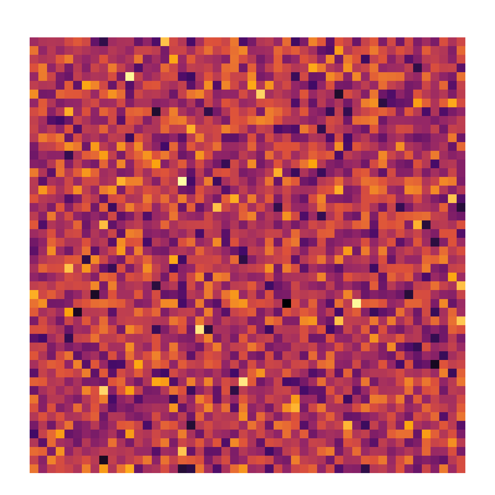
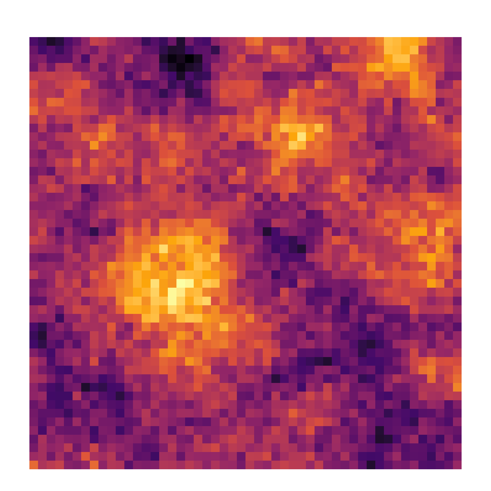
\(\Longrightarrow\) Autocorrelação espacial
É a medida estatística da dependência espacial.
Quantifica a força e direção da relação no espaço.
Autocorrelação vs correlação
Correlação de Pearson, Spearman, Kendall : Entre variáveis diferentes (\(X\) vs \(Y\)).
Autocorrelação espacial: mesma variável, locais diferentes (\(Y_i\) ou \(Y(s_i)\) vs \(Y_j\) ou \(Y(s_i)\) ).
Por que importa?
Ignorar a autocorrelação viola o pressuposto de independência (i.i.d.). \(\Longrightarrow\) modelos clássicos (MQO) tornam-se inválidos (estimativas enviesadas).
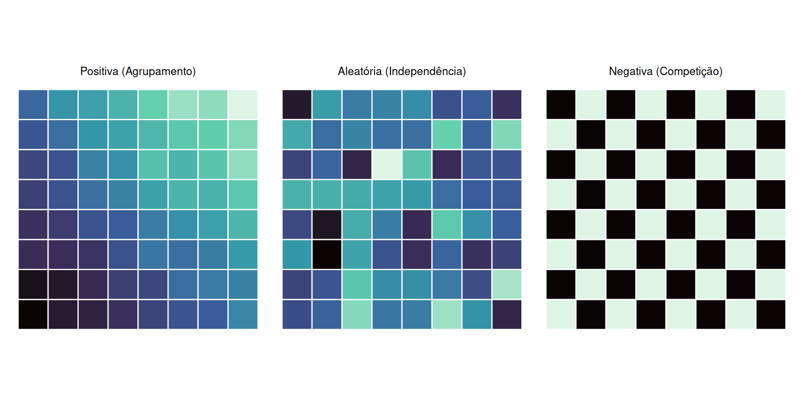
Figura 2: Tipos de autocorrelação espacial.
\(\Longrightarrow\) Vizinhança Espacial
- Quem é meu vizinho? O que define se alguém é meu vizinho ou não?
Para medir a dependência, precisamos definir formalmente a Conectividade .
Distância: Meu vizinho é aquele que se encontra a uma distância \(h_{ij}\).
Matriz de vizinhança (\(\mathbf{W}=[w_{ij}]_{n \times n}\)).
\[\begin{aligned}
w_{ij} = \begin{cases}
1, \: \: & i \sim j\\
0, \: \: & c.c
\end{cases}
\end{aligned}\]
Se for matriz de vizinhança como defino de alguém é meu vizinho? Resp: Figura 3
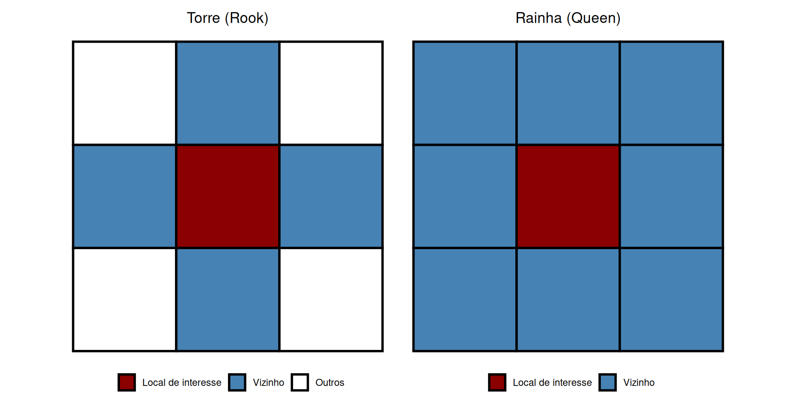
Figura 3: Critérios de Vizinhança por Contiguidade.
Só existem dois critérios de conectividade (distância ou compartilhar borda) ? Res: Não, outros casos são:
Distância Econômica: Fluxos comerciais, competição de mercado (Kelejian; Piras, 2017).
- Ex: Metrópoles fisicamente distantes (como São Paulo e Nova York) podem ser consideradas vizinhas devido aos fluxos financeiros e competição econômica direta, enquanto municípios contíguos de menor porte não.
Geografia econômica evolucionária (Boschma, 2005):
Cognitiva: Mesma base de conhecimento.
Organizacional: Mesmo grupo empresarial.
Social: Confiança e parentesco.
Institucional: Mesmas leis/normas.
Nota
A matriz \(\mathbf{W}\) deve capturar quem influencia quem, seja por contiguidade física ou rede socioeconômica.
\(\Longrightarrow\) Heterogeneidade espacial
É uma instabilidade estrutural do fenômeno no espaço.
Dependência espacial: Quanto o (s) vizinho (s) influencia (m) (\(Y_i \leftrightarrow Y_j\)).
Heterogeneidade: Como as estimativas dos parâmetros mudam (\(\beta_{\text{do centro}} \neq \beta_{\text{da periferia}}\)), e/ou não são constantes em toda a área de estudo Figura 4.
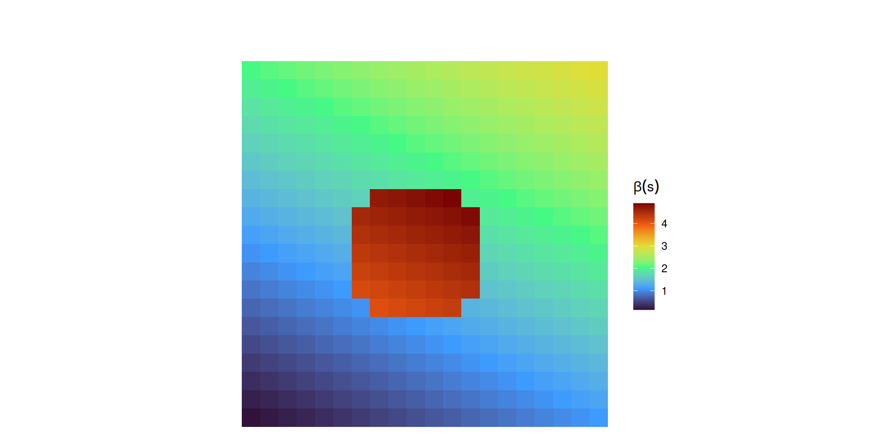
Figura 4: Heterogeneidade Espacial: O efeito de X em Y não é constante (\(\beta(s)\) muda gradualmente e abruptamente no centro)
Estacionariedade espacial
Normalmente só temos apenas uma única realização (como se fosse “uma foto”) do processo estocástico.
- Não podemos pedir para “chover de novo” para medir a variância.
Precisamos assumir algum grau de estabilidade / estacionariedade (ver Figura 5 a).
As propriedades estatísticas (média, variância) são estáveis no espaço.
O padrão se repete, permitindo usar dados de um local para estimar parâmetros de outro.
Níveis de estacionariedade
Estacionariedade de 1ª ordem (Média)
O valor esperado é constante em todo o domínio.
\(E[Y(\mathbf{s})] = \mu, \quad \forall \mathbf{s} \in D\)
\(\Longrightarrow\) Não há tendência (trend) global.
Estacionariedade de 2ª Ordem (estacionaridade fraca)
A covariância depende apenas da distância e direção (\(\mathbf{h}\)), não do local absoluto.
\(Cov[Y(\mathbf{s}), Y(\mathbf{s}+\mathbf{h})] = C(\mathbf{h})\)
\(\Longrightarrow\) A “regra” de como os pontos interagem é a mesma em toda a região.
- Estacionariedade estrita (estacionaridade forte)
- A dist. conjunta de probabilidade permanece inalterada sob qualquer deslocamento espacial.
\[\begin{aligned}
P(Y(s_1) \le y_1, \dots, Y(s_n) \le y_n) &= P(Y(s_1+h) \le y_1, \dots, Y(s_n+h) \le y_n) \\
&\Updownarrow\\
(Y(s_1), \dots, Y(s_n)) &\stackrel{d}{=} (Y(s_1+h), \dots, Y(s_n+h))
\end{aligned}\]
- Em Processos Gaussianos (GP), a estacionariedade de segunda ordem \(\Longrightarrow\) estacionaridade a estrita (Schmidt; O’Hagan, 2003).
- Estacionariedade intrínseca
\(E[Y(s +h) - Y(\mathbf{s})] = 0\).
\(Var(Y(s +h) - Y(\mathbf{s})) = 2\gamma(\mathbf{h})\).
Não estacionariedade espacial
Se apresenta tendência espacial na média (heterogeneidade de primeira ordem);
Se apresenta mudança na estrutura de dependência (heterogeneidade de segunda ordem)
\(\Longrightarrow\) É o inverso da estacionaridade (ver Figura 5 b)
Importante
Forçar um modelo estacionário em dados não estacionários pode resultar em erros de estimativa sistemáticos, enviesamento de previsões e, em aplicações práticas, levar a decisões equivocadas (Bandyopadhyay; Rao, 2017).
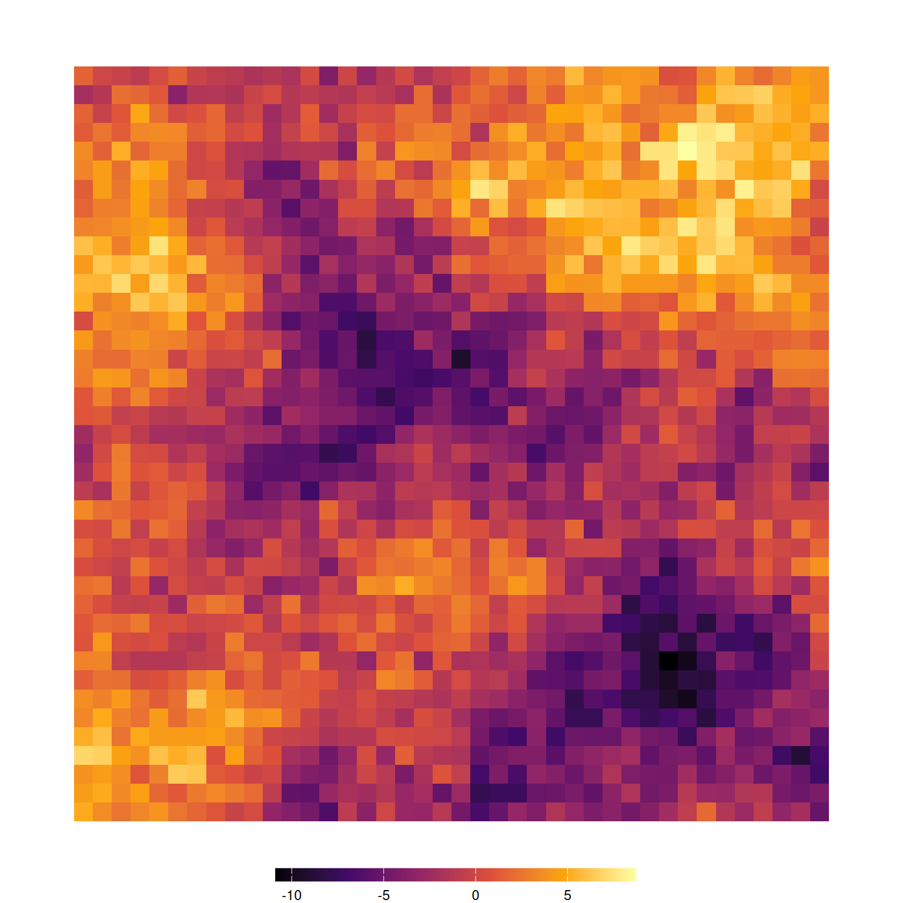
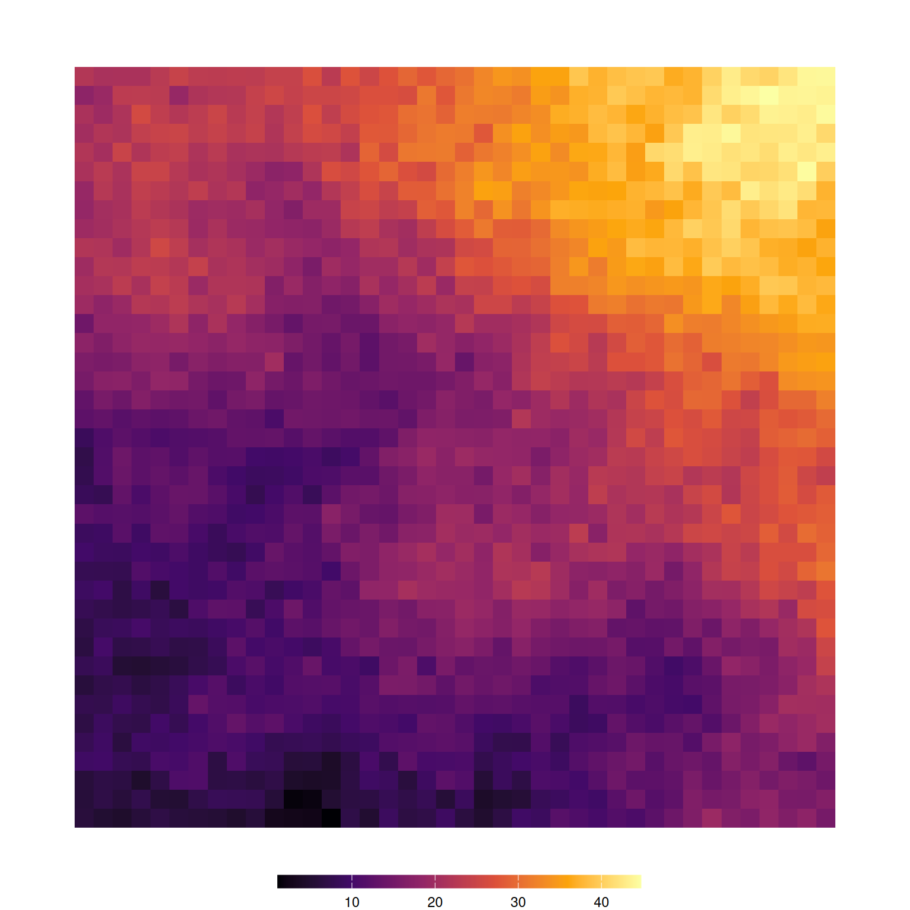
O Espaço Geográfico
A forma da Terra
Como representamos o planeta matematicamente para poder medir distâncias e localizar lugares?
Trabalhamos com três “Terras” diferentes:
- Superfície topográfica
É a superfície real da Terra, onde caminhamos e construímos cidades.
Nela existem montanhas, vales, rios e oceanos.
É muito irregular, cheia de altos e baixos.
Aviso
Por ser tão irregular, ela não é adequada para fazer cálculos matemáticos em grande escala.
- Geoide (A Terra da Física)
Imagine que toda a Terra estivesse coberta por água, totalmente parada, sem vento nem ondas.
- A forma que essa água teria é o geoide, e ele continua também por baixo dos continentes.
Aviso
Apesar de ser uma referência física importante, o geoide não é regular, o que dificulta seu uso em cálculos.
- Elipsoide de revolução
Representa a Terra real, mas é uma boa aproximação matemática.
Por ser regular e fácil de descrever com fórmulas, é no elipsoide que realizamos os cálculos de posição e distância, como latitude, longitude e os dados usados pelos sistemas de GPS.


O Datum
O elipsoide é apenas uma forma matemática idealizada. Sozinho, ele não sabe onde está a Terra de verdade.
Para usar latitude, longitude e calcular distâncias, precisamos posicionar esse elipsoide em relação ao planeta.
Esse processo de “ancoragem” é feito pelo Datum.
Definição
É o sistema de referência que ancora o elipsoide à Terra, definindo:
Onde está o centro do elipsoide;
Como ele está orientado;
Qual é a sua escala.
Tipos de Datum
Existem duas grandes famílias, dependendo do objetivo do mapeamento:
Encaixa perfeitamente em uma região específica (país/continente).
O centro do elipsoide não coincide com o centro de massa da Terra.
Minimiza erros localmente, mas erra fora da região.
Exemplo: SAD69
SAD69: South American Datum (1969).
Inadequado para GPS moderno.
Representa a Terra como um todo (na média).
O centro do elipsoide coincide com o centro de massa da Terra.
Exemplos
WGS84: World Geodetic System 1984: Padrão mundial do GPS e Google Maps.
SIRGAS 2000: Sistema de Referência Geocêntrico para as Américas: Padrão oficial atual do Brasil (compatível com GPS).
NAD83: North American Datum 1983: Padrão nos EUA e Canadá.
Coordenadas Geográficas
Já temos o formato (Elipsoide) e a posição (Datum). Como descrevemos um ponto sobre ele?
Ângulo entre o plano equatorial e a reta normal (perpendicular) à superfície.
Varia de \(-90^\circ\) (Sul) a \(+90^\circ\) (Norte).
Informa o quão para cima (N) ou para baixo (S) estamos.
Ângulo medido a partir do Meridiano de Greenwich.
Varia de \(-180^\circ\) (Oeste) a \(+180^\circ\) (Leste).
Informa o quão para a esquerda (W) ou direita (E) estamos.


Graus, minutos e segundos vs. coordenadas decimais
Qual é a forma mais encontrada de representação de lugar?
- \(23^\circ 33' 15'' S\)
Qual é a forma mais usada pelos softwares?
- \(-23,554167^\circ\)
Para o computador (R, Python), precisamos de Graus Decimais (DD), não Minutos/Segundos.
Fórmula:
\[ DD = (\text{Sinal}) \times \left(D + \frac{M}{60} + \frac{S}{3600}\right) \]
Aviso
Regra dos Sinais: Sul (S) e Oeste (W) \(\Longrightarrow\) Negativo (-)
Exemplo: \(23^\circ 33' 15'' S\)
\[ \begin{aligned} DD &= (-1) \times \left( D_{graus} + \frac{M_{minutos}}{60} + \frac{S_{segundos}}{3600} \right) \\ DD &= (-1) \times \left( 23 + \frac{33}{60} + \frac{15}{3600} \right) \\ DD &= (-1) \times \left( 23 + 0,55 + 0,00416\dots \right) \\ DD &= -23,554167^\circ \end{aligned} \tag{1}\]
Conversão graus decimais para sistema sexagesimal
O valor absoluto da coordenada decimal fornece os Graus inteiros (\(D = \lfloor |DD| \rfloor\)). veja signif. de \(\lfloor \cdot\rfloor\) aqui
A parte fracionária restante é multiplicada por 60 para obter os minutos decimais
A parte inteira deste resultado torna-se os Minutos (\(M\)).
A nova parte fracionária restante (dos minutos) é multiplicada novamente por 60 para obter os Segundos (\(S\)).
O sinal original do valor decimal (\(+\) ou \(-\)) determina o hemisfério (Norte/Sul para latitude, Leste/Oeste para longitude).
Revertendo o valor \(-23,554167^\circ\) calculado anteriormente, obtemos:
\[ \begin{aligned} \text{Graus} &= \lfloor | -23,554167 | \rfloor = 23^\circ \\ \text{Resto}_1 &= 0,554167 \\ \text{Minutos} &= \lfloor 0,554167 \times 60 \rfloor = \lfloor 33,25002 \rfloor = 33' \\ \text{Resto}_2 &= 0,25002 \\ \text{Segundos} &= 0,25002 \times 60 \approx 15,00'' \end{aligned} \]
Como o valor original (\(-23,554167^\circ\)) era negativo, combinamos o resultado calculado com a direção identificada no início, resultando em: \(23^\circ 33' 15'' S\).
Cuidado
Falamos: “Latitude e Longitude”
Matemática/Software usa: \((X, Y) \rightarrow (\text{Longitude}, \text{Latitude})\)
Inverter a ordem joga seus dados para o outro lado do mundo ou gera erro geométrico.
Precisão Numérica
Ao converter de volta para Sexagesimal (\(DD \to DMS\)), computadores geram resíduos de ponto flutuante.
Esperado: \(15''\)
Computado: \(14.999999''\)
\(\Longrightarrow\) Arredonde para 2 casas decimais na visualização.
Sistemas de Referência (CRS)
Para calcular distâncias em metros num computador, precisamos “traduzir” a Terra curva para formato plano.
CRS (Coordinate Reference System): Define como o mapa 2D (\(x,y\)) se relaciona com a Terra real.
Ele contém :
O Datum (onde ancora);
O Elipsoide (a forma);
A Projeção.
Sem CRS, não há análise
Sem CRS o software trata seus dados apenas como desenhos abstratos, impedindo sobreposição de camadas e cálculos reais.
Projeções Comuns na Prática
Divide a Terra em 60 fatias (zonas). Dentro da zona, a distorção é mínima.
Padrão para escala Local/Regional.

- Preserva áreas. Padrão para mapas de países continentais para garantir comparações justas de densidade.

Cilíndrica Conforme & Padrão da Web (Google Maps).
Distorce áreas nos polos (Groenlândia parece maior que a África).

Not only is it easy to lie with maps — (Monmonier, 2022)
Nenhum mapa é perfeito.
Mapa não é para efeitos estéticos
Padronização: EPSG e PROJ
Para não decorar parâmetros complexos, usamos códigos numéricos EPSG: European Petroleum Survey Group.
WGS 84 - World Geodetic System versão 1984
Usa coordenadas em latitude e longitude.
Unidade de medida: graus ( \(^\circ\)).
Usado para localização global, GPS e visualização em mapas.
Nota: Não recomendável para cálculo de distâncias ou áreas.
SIRGAS 2000 - Sistema de Referência Geocêntrico para as Américas. / UTM zona 23S, sistema projetado
Usa coordenadas planas.
Unidade de medida: metros (m).
Nota: Usado para medições de distância, área e análises espaciais no Brasil.
Estes códigos numéricos curtos funcionam como identificadores para um CRS.
Ferramenta Essencial
Não decore códigos. Use epsg.io. Clique no mapa para descobrir a zona UTM e o código da sua região de estudo.
Formas de representar dados espaciais
Forma (vetorial)
O mundo é formado por objetos discretos com bordas definidas.
- Exemplos: Uma casa, uma estrada, um município.
Raster/Matricial
O mundo é uma superfície contínua que varia suavemente.
Exemplos: Temperatura, elevação, salinidade do mar.
Modelo Vetorial
A unidade fundamental de análise vetorial é a Feição Simples (ISO 19125 - International Organization for Standardization);
- Define que um objeto espacial é composto pela sua forma (onde?) e seus dados /atributos (O quê?)
Formas geométricas simples
POINT)
LINESTRING)
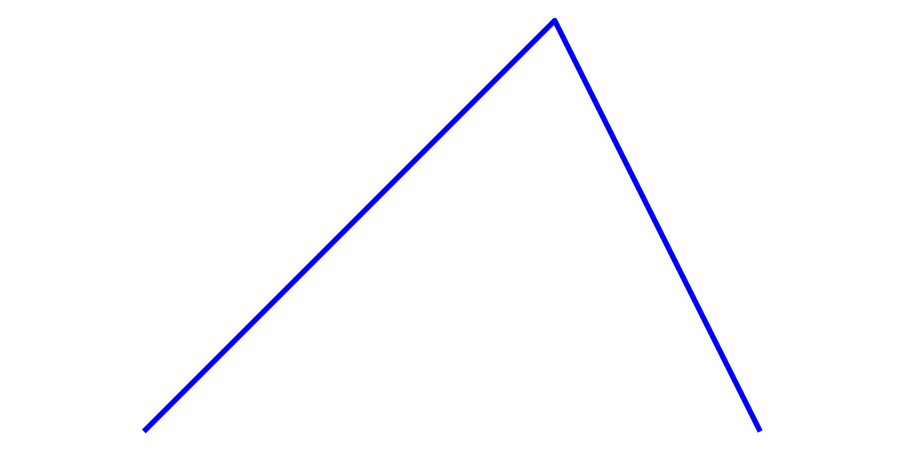
POLYGON)
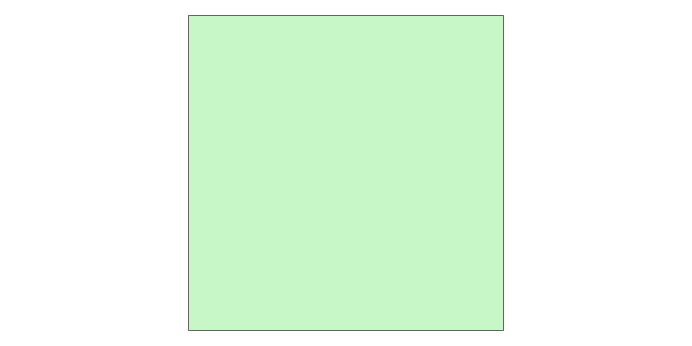
Formas geométricas complexas
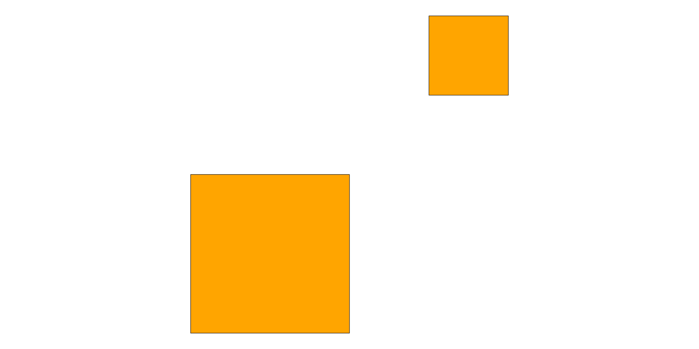
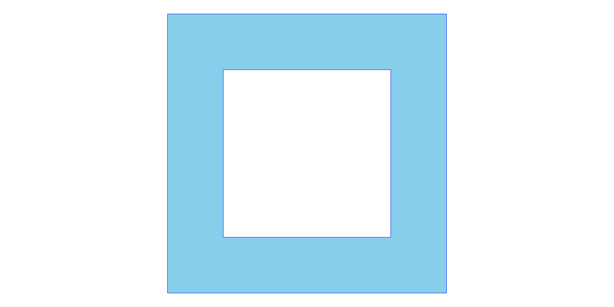
Modelo Raster (Matricial)
O espaço particionado em uma grade regular de células (pixels) Figura 14.
Pixels: Cada célula da grade armazena um valor numérico único.
Resolução: Tamanho do pixel (ex: 30m x 30m).
Trade-off: Mais detalhe \(\leftrightarrow\) Arquivo gigante.
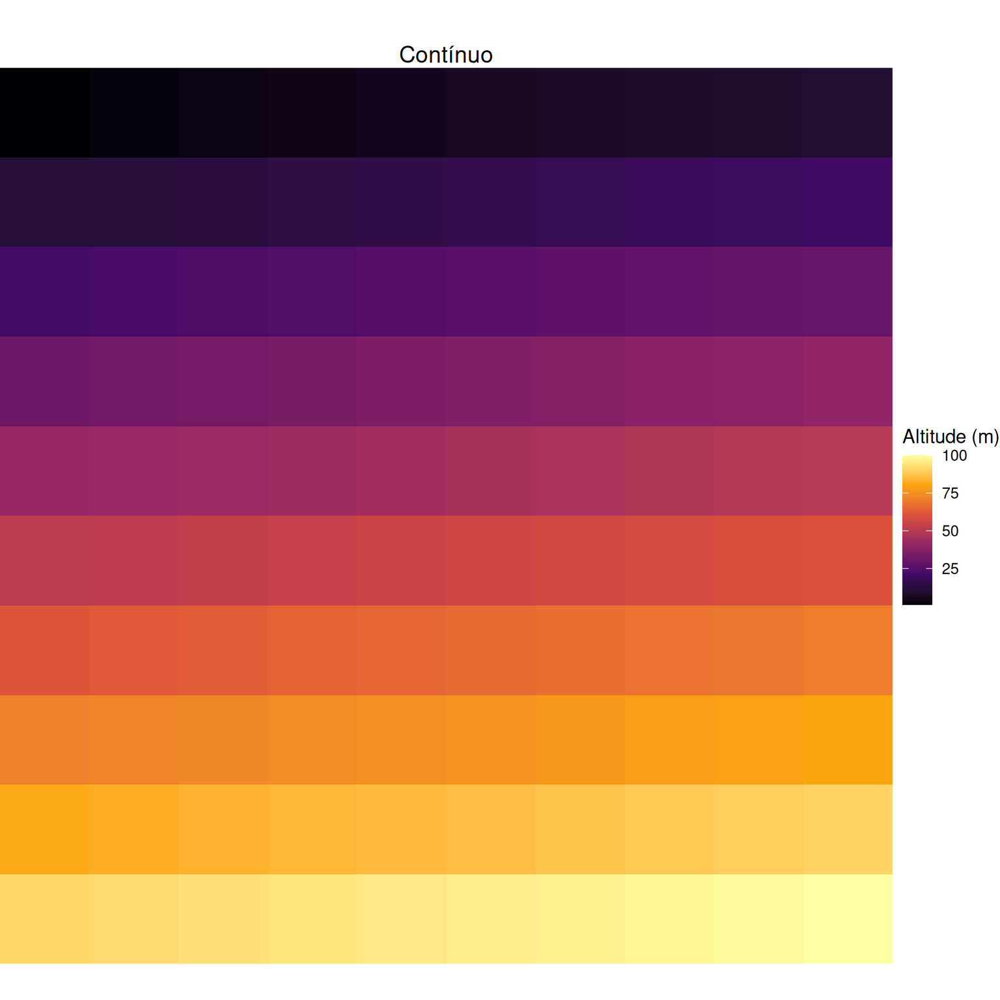
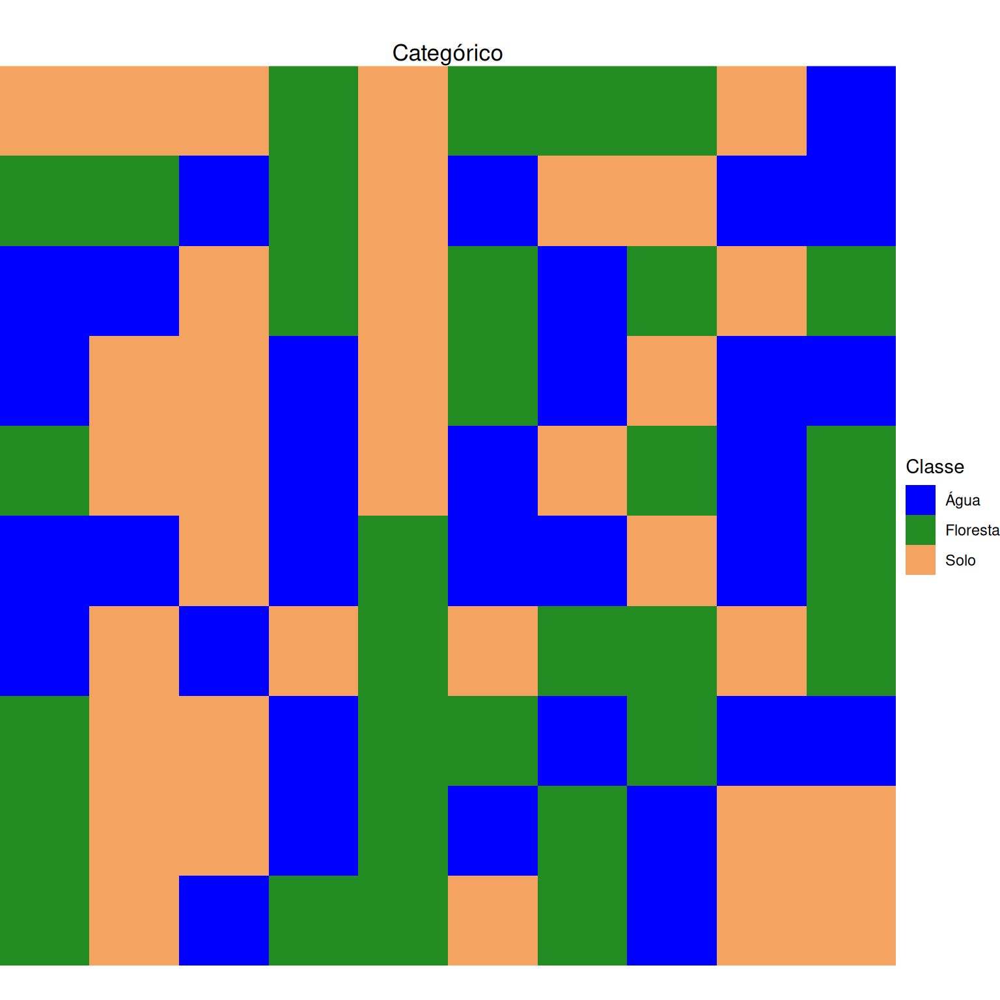
Formatos de dados espaciais
- Shapefile (.shp): Desenvolvido pela ESRI
.shp: Contém a geometria (o desenho do mapa)..shx: Contém o índice posicional (para o software ler o desenho rápido)..dbf: Contém a tabela de atributos (os dados estatísticos).
Cuidado
Não é um arquivo único! É um pacote (.shp + .shx + .dbf). Se perder um, o arquivo corrompe.
GeoJSON (.json): Texto (Web). Leve e legível. Padrão atual.
GeoPackage (.gpkg): Moderno, arquivo único (SQLite). Suporta vetor e raster.
etc.
GeoTIFF (.tiff) : Imagem TIFF com metadados geográficos.
NetCDF (.nc): Cubos de dados multidimensionais (Latitude, Longitude, Tempo). Padrão em climatologia.
Tipos de dados espaciais
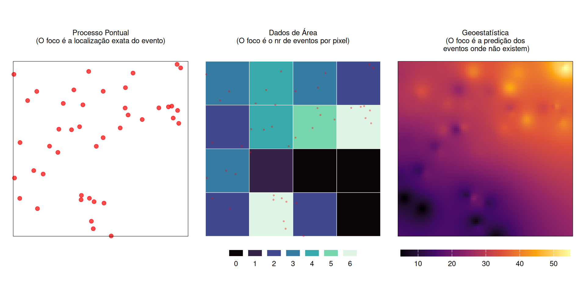
Figura 15: Tipos de dados espaciais
Para saber mais
Vídeos Recomendados
Leitura
Spatial Data Science (Pebesma & Bivand), capítulos 1 a 6
Próximos Passos (Parte 2)
Agora que entendemos os conceitos de dependência, projeção e tipos de dados, vamos para a prática:
Usar o pacote
sfpara manipular vetores.Baixar dados reais do Brasil com
geobr.Criar mapas temáticos profissionais com
mapsfeggplot2.
Importante
Ler a seção 2.8 e 2.9 do material de didatico, disponível no link: https://nhancololo.github.io/, a aba Teaching, opção Spatial statistics.
Fim da Parte Teórica
Referências
BANDYOPADHYAY, Soutir; RAO, Suhasini Subba. A test for stationarity for irregularly spaced spatial data. Journal of the Royal Statistical Society Series B: Statistical Methodology, v. 79, n. 1, p. 95–123, 2017.
BARTHOLOMEW, David J. What is statistics? Journal of the Royal Statistical Society Series A: Statistics in Society, v. 158, n. 1, p. 1–20, 1995.
BOSCHMA, Ron. Proximity and innovation: a critical assessment. Regional studies, v. 39, n. 1, p. 61–74, 2005.
CRAWFORD, T. W. Scale Analytical. In: [S.l.]: Elsevier, 2009. p. 29–36.
FIENBERG, Stephen E. What is statistics? Annual review of statistics and its application, v. 1, n. 1, p. 1–9, 2014.
JANSSEN, Volker. Understanding coordinate reference systems, datums and transformations. 2009.
KELEJIAN, Harry; PIRAS, Gianfranco. Spatial econometrics. [S.l.]: Academic Press, 2017.
MONMONIER, Mark. How to lie with maps. [S.l.]: University of Chicago Press, 2022.
SCHMIDT, Alexandra M.; O’HAGAN, Anthony. Bayesian inference for non-stationary spatial covariance structure via spatial deformations. Journal of the Royal Statistical Society Series B: Statistical Methodology, v. 65, n. 3, p. 743–758, 2003.
WILD, Christopher J.; UTTS, Jessica M.; HORTON, Nicholas J. What is statistics? In: International handbook of research in statistics education. [S.l.]: Springer, 2017. p. 5–36.